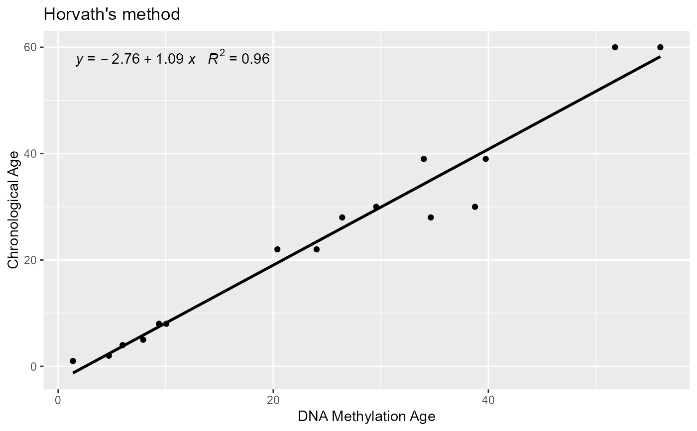

Plot DNAm age estimation vs chronological age.
Arguments
- x
DNAm age estimation
- y
Chronological age
- tit
Plot title. Default is "Horvath's method".
- clock
Type of clock 'chronological' or 'GA', default 'chronological'
- ...
Other plot parameters for ggplot
Examples
library(tidyverse)
#> ── Attaching packages ─────────────────────────────────────── tidyverse 1.3.2 ──
#> ✔ ggplot2 3.3.6 ✔ purrr 0.3.5
#> ✔ tibble 3.1.8 ✔ dplyr 1.0.10
#> ✔ tidyr 1.2.1 ✔ stringr 1.4.1
#> ✔ readr 2.1.3 ✔ forcats 0.5.2
#> ── Conflicts ────────────────────────────────────────── tidyverse_conflicts() ──
#> ✖ ggplot2::Position() masks BiocGenerics::Position(), base::Position()
#> ✖ dplyr::combine() masks Biobase::combine(), BiocGenerics::combine()
#> ✖ dplyr::filter() masks stats::filter()
#> ✖ dplyr::lag() masks stats::lag()
path <- system.file("extdata", package = "methylclock")
covariates <- read_csv(file.path(
path,
"SampleAnnotationExample55.csv"
))
#> Rows: 16 Columns: 14
#> ── Column specification ────────────────────────────────────────────────────────
#> Delimiter: ","
#> chr (6): id, title, geo_accession, TissueDetailed, Tissue, CauseofDeath
#> dbl (6): OriginalOrder, diseaseStatus, Age, PostMortemInterval, individual, ...
#> lgl (2): Caucasian, FemaleOriginal
#>
#> ℹ Use `spec()` to retrieve the full column specification for this data.
#> ℹ Specify the column types or set `show_col_types = FALSE` to quiet this message.
age <- covariates$Age
MethylationData <- get_MethylationDataExample()
#> snapshotDate(): 2022-04-26
#> see ?methylclockData and browseVignettes('methylclockData') for documentation
#> loading from cache
age.example55 <- DNAmAge(MethylationData)
#> snapshotDate(): 2022-04-26
#> see ?methylclockData and browseVignettes('methylclockData') for documentation
#> loading from cache
#> snapshotDate(): 2022-04-26
#> see ?methylclockData and browseVignettes('methylclockData') for documentation
#> loading from cache
#> snapshotDate(): 2022-04-26
#> see ?methylclockData and browseVignettes('methylclockData') for documentation
#> loading from cache
#> snapshotDate(): 2022-04-26
#> see ?methylclockData and browseVignettes('methylclockData') for documentation
#> loading from cache
#> snapshotDate(): 2022-04-26
#> see ?methylclockData and browseVignettes('methylclockData') for documentation
#> loading from cache
#> snapshotDate(): 2022-04-26
#> see ?methylclockData and browseVignettes('methylclockData') for documentation
#> loading from cache
#> snapshotDate(): 2022-04-26
#> see ?methylclockData and browseVignettes('methylclockData') for documentation
#> loading from cache
#> snapshotDate(): 2022-04-26
#> see ?methylclockData and browseVignettes('methylclockData') for documentation
#> loading from cache
#> snapshotDate(): 2022-04-26
#> see ?methylclockData and browseVignettes('methylclockData') for documentation
#> loading from cache
#> Warning: The number of missing CpGs forHannumclock exceeds 80%.
#> ---> This DNAm clock will be NA.
#> rows : 353 cols : 16
#> Warning: The number of missing CpGs forSkinclock exceeds 80%.
#> ---> This DNAm clock will be NA.
#> Warning: The number of missing CpGs forPedBEclock exceeds 80%.
#> ---> This DNAm clock will be NA.
#> Warning: The number of missing CpGs forTLclock exceeds 80%.
#> ---> This DNAm clock will be NA.
#> Warning: The number of missing CpGs forBLUPclock exceeds 80%.
#> ---> This DNAm clock will be NA.
#> Warning: The number of missing CpGs forENclock exceeds 80%.
#> ---> This DNAm clock will be NA.
plotDNAmAge(age.example55$Horvath, age)
